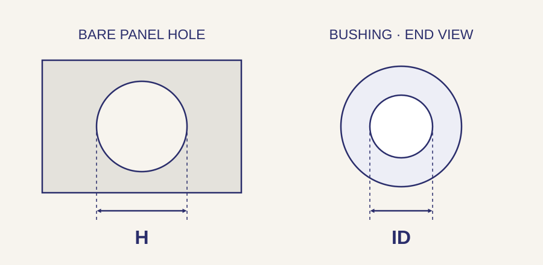

// ELECTRONIC HARDWARE
Bushings for panel holes and electronic assemblies.
A panel bushing gives a wire or cable a finished passage through a mounting hole. Sleeves and flanged bushings also fit around fasteners and other assembly features. Send Webson a part number or drawing, and we can quote the bushing for your panel or assembly.
Request a bushing quote →Pricing and availability confirmed with quotation.
Choose the bushing for the installation
On a small screen, scroll sideways to see the full table.
| Component | What it does | What to specify |
|---|---|---|
| Snap-in panel bushings | Line a prepared panel hole with a retained, smooth-bore component. | Mounting-hole diameter, permitted panel thickness and clear inside diameter. |
| Split or open bushings | Styles intended to fit around an existing wire or cable where the product allows it. | Cable size, closure and retention details, and access for fitting the part. |
| Sleeve bushings | Fit around a fastener, shaft or other feature. | Inside and outside diameters, length, fit and material. |
| Flanged bushings | Use a shoulder or flange to locate the bushing against a surface. | Barrel diameter and length, flange size, bore and seating area. |
Measure the hole, the panel and the passage

For a panel bushing, start with the finished mounting hole and the panel’s actual thickness. Then check the passage needed for the cable or other item. A larger flange does not mean the part fits a larger hole.
On a small screen, scroll sideways to see the full table.
| Feature | Information to send | What to check |
|---|---|---|
| Mounting hole | Finished hole diameter and any specified tolerance. | Compare the hole to the installation drawing, not to the flange diameter. |
| Panel thickness | Thickness where the bushing locks or seats. | A snap feature must suit the stated panel-thickness range. |
| Clear bore / ID | Required opening through the installed part. | Allow for the actual wire bundle, connector or mating component that must pass through. |
| Flange and projection | Head diameter, barrel length and space behind the panel. | Check nearby parts and whether both sides of the panel have enough room. |
Put the service conditions on the RFQ
For a replacement, the full manufacturer part number is the best starting point. For a new part, specify the material, color and conditions it must withstand: temperature, cleaning agents, exposure and any required flammability or electrical classification. We can review those details with the dimensions when sourcing the component.
Wire protection and cable retention are separate jobs
A smooth passage can keep wiring away from a raw panel edge. It does not, by itself, provide cable strain relief, a liquid-tight seal or a specified electrical rating. If the cable needs to resist a pull or the enclosure needs sealing, include that requirement so the correct retention or sealing product can be identified.
Before you order
Is the mounting-hole diameter the same as the inside diameter?
No. The mounting hole receives the outside of the bushing. The inside diameter is the clear passage through it. Both dimensions appear in many panel-bushing catalogs.
Can I use the same snap bushing in a thicker panel?
Only if the new thickness is within the range specified for that part. Check the locking feature, seating and space behind the panel.
Is a snap bushing also a strain relief?
Do not assume so. A passage bushing and a cable-retention product have different functions. Identify the required pull resistance or strain-relief function when asking for a quote.
What if I cannot find the old part number?
Send a drawing or photos with measurements of the hole, panel thickness, bore, flange and projection. Include material markings if they are visible. Webson can use those details to review sourcing options; photos alone may not identify an exact replacement.
Send the part number—or the dimensions that define it
Include quantity and requested delivery date with the manufacturer part number. If you are working from a drawing, add the hole diameter, panel thickness, clear bore, flange and barrel dimensions, material and any required documentation.
Request a bushing quote →Webson is an AS9120B and ISO 9001:2015 certified distributor. Include required certificates and traceability with your inquiry. View our certificate and quality scope.
Webson Fasteners · Serving customers since 1986 · Deer Park, New York